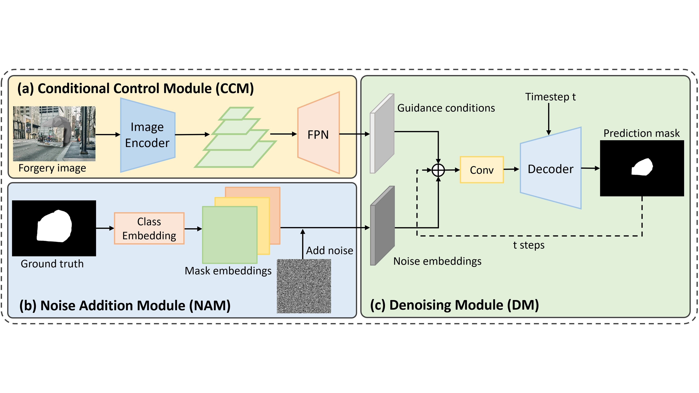
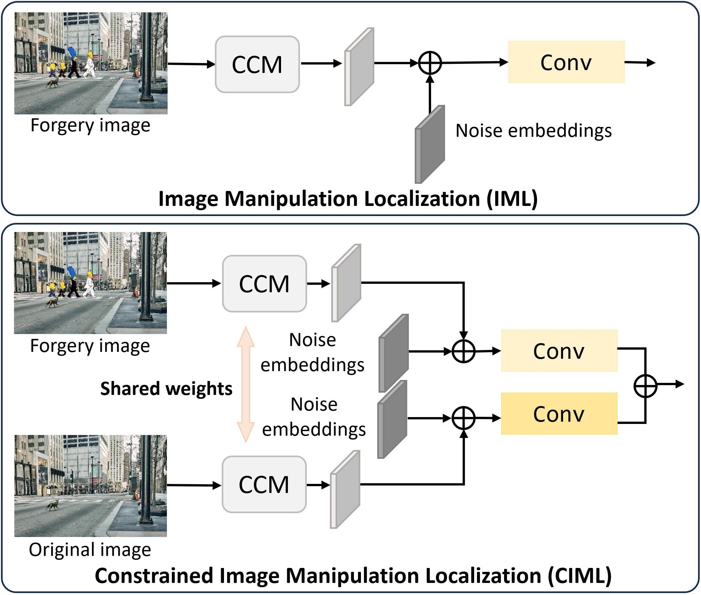
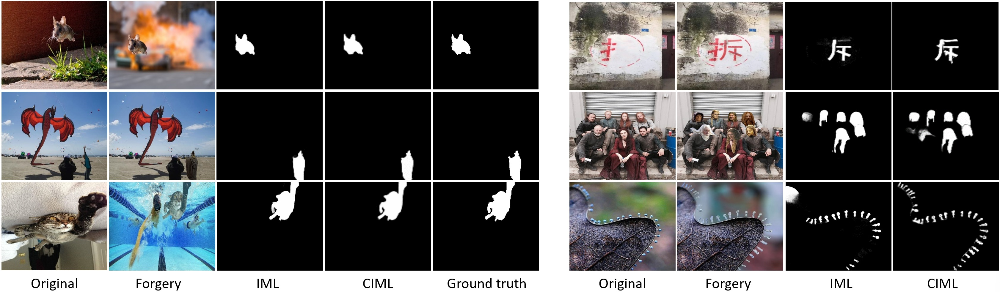
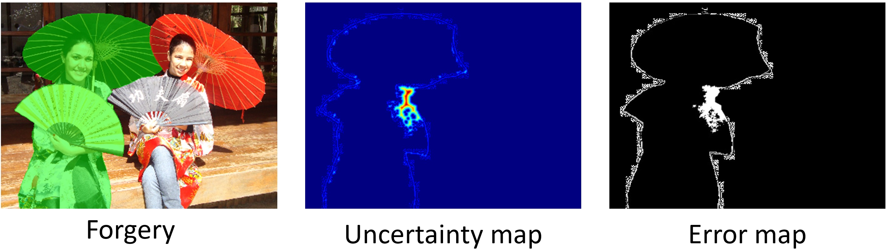

Abstract
Overview
Image manipulation localization must handle both open-world forgeries and constrained settings where an original reference image is available. UGD-IML unifies these tasks with a generative diffusion framework that iteratively denoises a manipulation mask. A conditional control module extracts image guidance, while task-specific conditioning and noise embeddings allow one model to support both settings. Multi-step generation also exposes uncertainty around difficult boundaries and improves robustness across manipulation types.
01 · Figure
UGD-IML formulates manipulation localization as conditional mask generation, using a shared diffusion model for both unconstrained localization and class-constrained localization.

02 · Figure
Unified Task Conditioning

03 · Figure
Localization Results

04 · Figure
Uncertainty Awareness

Citation
BibTeX
@article{mi2026ugdiml,
title={{UGD-IML}: A Unified Generative Diffusion-based Framework for Constrained and Unconstrained Image Manipulation Localization},
author={Mi, Yachun and He, Xingyang and Sun, Shixin and Li, Yu and Li, Zhixuan and Jin, Jian and Hui, Chen and Liu, Shaohui},
journal={Neurocomputing},
year={2026},
publisher={Elsevier}
}